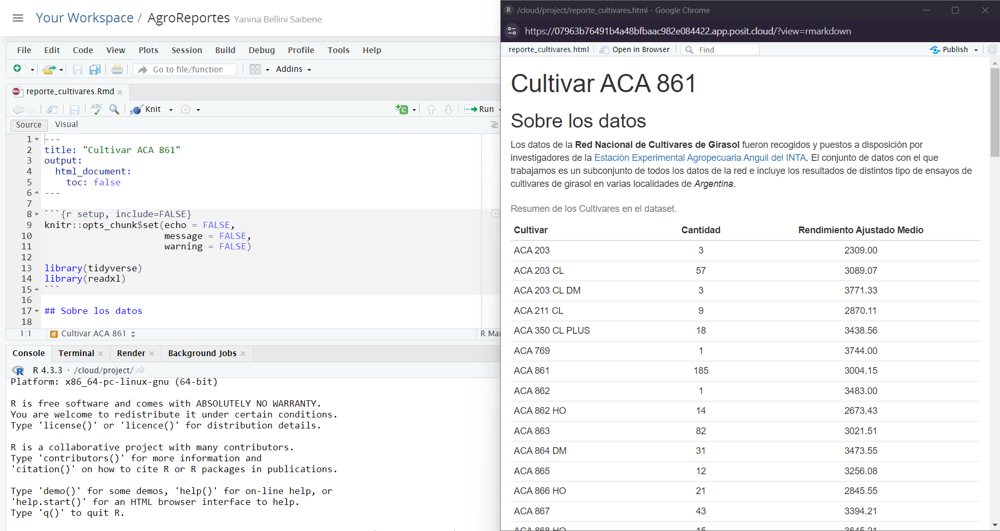

¿Por qué R?
Generamos reportes e informes para diversas actividades, a veces esos
reportes son repetitivos en el tiempo (por ejemplo informes mensuales,
informes al final de una campaña). Solemos utilizar más de un software
para generarlos, seguramente alguna hoja de cálculo y algún procesador
de texto. A veces sumamos algun aplicativo para hacer
presentaciones.
Si venís usándolos hace tiempo, seguro que aprendiste un montón de
trucos para sacarle el jugo al máximo, habrás aprendido a usar fórmulas,
tablas dinámicas, e incluso macros en las hojas de calculo y las
plantillas y estilos en los documentos de texto o las presentaciones.
Pero seguro que también sufriste sus limitaciones.
Por ejemplo, sn una hoja de cálculo no hay un límite claro entre
datos y análisis. Sobrescribir datos es un peligro muy real y análisis
complicados son imposibles de entender, especialmente si abrís una hoja
de cálculo armada por otra persona (que quizás es tu vos del pasado).
Además, repetir el análisis con datos distintos o cambiando algún
parámetro se puede volver muy engorroso.
Seguro también tenes que copiar y pegar resultados o pasos
intermedios de un software al otro, como un lindo gráfico de Excel al
documento de Word con el informe.
Si lo que necesitás son reportes frecuentes y automáticos, y análisis
de datos con muchas partes móviles, estaría bueno poder escribir una
receta paso a paso y que la computadora corra todo automáticamente cada
vez que se lo pedís. Para poder hacer eso, ese paso a paso tiene que
estar escrito en un lenguaje que la computadora pueda entender, ese
lenguaje es R.
¿Cómo vamos a trabajar?
Vamos a usar R como lenguaje de programación y RStudio como una IDE
(Integrated Development Environment), un Entorno Integrado de
Desarrollo. Si no los tenés instalado en tu computadora, no te
preocupes, tenemos este proyecto en RStudio
Cloud para que puedas trabajar.
TODO: actualizar link a proyecto
Vamos a trabajar con archivos de RMarkdown para generar nuestro
reportes y poder guardar el código que genera nuestro análisis, así que
vamos a ver qué es un documento RMarkdown. Te preparamos este informe de ejemplo, por favor
abrilo en RStudio o en RStudio Cloud.
RMarkdown
Un archivo RMarkdown es un archivo de texto plano, con algunas reglas
y una sintaxis especial que nos permite escribir código y texto juntos.
Cuando se “teje” (knit), el código se evaluará y ejecutará y el texto se
formateará de manera que se cree un informe o documento reproducible que
sea agradable de leer y que contenga todo tu trabajo.
Esto es realmente crítico para la reproducibilidad. También nos
ahorra tiempo y puede ayudar en las tareas de automatización. Este
documento recreará tus figuras por ti en el mismo documento donde estás
escribiendo el texto que las explica. Esto le ahorrará el esfuerzo de
hacer un análisis, guardar un gráfico en un archivo, copiar y pegar ese
gráfico en Word o Power Point o Google Slides, y tener que hacerlo todo
de nuevo después de descubrir un error tipográfico.
Ahora veamos cómo es nuestro Informe de Cultivares.
- La parte superior tiene el Título y el tipo de salida (que en este
caso es un documento HTML).
- Debajo hay secciones alternas blancas y grises.
Estas son las dos secciones principales que componen un archivo
RMarkdown: * Las secciones grises son el código R * Las secciones
blancas son el texto de Markdown
- Hay texto negro, azul y verde.
Sigamos adelante y “tejamos (knit)” el documento haciendo clic en el
ovillo de hilo azul ( ) en la parte
superior del archivo RMarkdown.
) en la parte
superior del archivo RMarkdown.
¡Acabamos de crear un archivo html! Se trata de una única página web
que estamos viendo localmente en nuestros propios ordenadores. Al
generar este documento RMarkdown, R ha formateado el texto markdown y ha
ejecutado el código R.

Texto markdown
Podes ver una guia sobre rmarkdown en
esta guía rápida, pero aquí hay una sintaxis mínima para
empezar:
- encabezados empiezan con
# o ##y asi
siguiendo (es importante poner un espacio después del último
#).
- las palabras en negrita están rodeadas de
**
- y las cursiva, con
_
Código de R
El código R se escribe dentro de “chunks (trozos)” de código. Los
trozos de código comienzan con ```{r label} (donde “label”
es un nombre opcional y único) y terminan con ```. En
RStudio, podes crear un nuevo chunk con el atajo de teclado
Ctrl + Alt + I.
Este informe muestra información sobre un cultivar, pero podríamos
cambiar algunas líneas de código para crear el mismo análisis para los
otros cultivares incluidos en la base de datos.
Ahora es tu turno. Sigue buscando en el código, si encuentras alguna
mención a “ACA 861”, cámbiala por cualquiera de los otros
cultivares.
Esta tarea es un poco engorrosa si hay que cambiar muchas cosas cada
vez que queremos volver a ejecutar el análisis para diferentes especies.
Pero no te preocupes, aprenderemos a hacer todo más automático al final
del taller.
LS0tDQp0aXRsZTogIkludHJvZHVjY2nDs24geSBSZXBvcnRlcyINCm91dHB1dDogDQogIGh0bWxfZG9jdW1lbnQ6DQogICAgY29kZV9kb3dubG9hZDogdHJ1ZQ0KICAgIHRvYzogdHJ1ZQ0KICAgIHRvY19mbG9hdDogZmFsc2UNCiAgICBoaWdobGlnaHQ6IHRhbmdvDQotLS0NCg0KIyMgwr9Qb3IgcXXDqSBSPw0KDQpHZW5lcmFtb3MgcmVwb3J0ZXMgZSBpbmZvcm1lcyBwYXJhIGRpdmVyc2FzIGFjdGl2aWRhZGVzLCBhIHZlY2VzIGVzb3MgcmVwb3J0ZXMgc29uIHJlcGV0aXRpdm9zIGVuIGVsIHRpZW1wbyAocG9yIGVqZW1wbG8gaW5mb3JtZXMgbWVuc3VhbGVzLCBpbmZvcm1lcyBhbCBmaW5hbCBkZSB1bmEgY2FtcGHDsWEpLiBTb2xlbW9zIHV0aWxpemFyIG3DoXMgZGUgdW4gc29mdHdhcmUgcGFyYSBnZW5lcmFybG9zLCBzZWd1cmFtZW50ZSBhbGd1bmEgaG9qYSBkZSBjw6FsY3VsbyB5IGFsZ8O6biBwcm9jZXNhZG9yIGRlIHRleHRvLiBBIHZlY2VzIHN1bWFtb3MgYWxndW4gYXBsaWNhdGl2byBwYXJhIGhhY2VyIHByZXNlbnRhY2lvbmVzLiANCg0KU2kgdmVuw61zIHVzw6FuZG9sb3MgaGFjZSB0aWVtcG8sIHNlZ3VybyBxdWUgYXByZW5kaXN0ZSB1biBtb250w7NuIGRlIHRydWNvcyBwYXJhIHNhY2FybGUgZWwganVnbyBhbCBtw6F4aW1vLCBoYWJyw6FzIGFwcmVuZGlkbyBhIHVzYXIgZsOzcm11bGFzLCB0YWJsYXMgZGluw6FtaWNhcywgZSBpbmNsdXNvIG1hY3JvcyBlbiBsYXMgaG9qYXMgZGUgY2FsY3VsbyB5IGxhcyBwbGFudGlsbGFzIHkgZXN0aWxvcyBlbiBsb3MgZG9jdW1lbnRvcyBkZSB0ZXh0byBvIGxhcyBwcmVzZW50YWNpb25lcy4gUGVybyBzZWd1cm8gcXVlIHRhbWJpw6luIHN1ZnJpc3RlIHN1cyBsaW1pdGFjaW9uZXMuDQoNClBvciBlamVtcGxvLCBzbiB1bmEgaG9qYSBkZSBjw6FsY3VsbyBubyBoYXkgdW4gbMOtbWl0ZSBjbGFybyBlbnRyZSBkYXRvcyB5IGFuw6FsaXNpcy4gU29icmVzY3JpYmlyIGRhdG9zIGVzIHVuIHBlbGlncm8gbXV5IHJlYWwgeSBhbsOhbGlzaXMgY29tcGxpY2Fkb3Mgc29uIGltcG9zaWJsZXMgZGUgZW50ZW5kZXIsIGVzcGVjaWFsbWVudGUgc2kgYWJyw61zIHVuYSBob2phIGRlIGPDoWxjdWxvIGFybWFkYSBwb3Igb3RyYSBwZXJzb25hIChxdWUgcXVpesOhcyBlcyB0dSB2b3MgZGVsIHBhc2FkbykuIEFkZW3DoXMsIHJlcGV0aXIgZWwgYW7DoWxpc2lzIGNvbiBkYXRvcyBkaXN0aW50b3MgbyBjYW1iaWFuZG8gYWxnw7puIHBhcsOhbWV0cm8gc2UgcHVlZGUgdm9sdmVyIG11eSBlbmdvcnJvc28uDQoNClNlZ3VybyB0YW1iacOpbiB0ZW5lcyBxdWUgY29waWFyIHkgcGVnYXIgcmVzdWx0YWRvcyBvIHBhc29zIGludGVybWVkaW9zIGRlIHVuIHNvZnR3YXJlIGFsIG90cm8sIGNvbW8gdW4gbGluZG8gZ3LDoWZpY28gZGUgRXhjZWwgYWwgZG9jdW1lbnRvIGRlIFdvcmQgY29uIGVsIGluZm9ybWUuDQoNClNpIGxvIHF1ZSBuZWNlc2l0w6FzIHNvbiByZXBvcnRlcyBmcmVjdWVudGVzIHkgYXV0b23DoXRpY29zLCB5IGFuw6FsaXNpcyBkZSBkYXRvcyBjb24gbXVjaGFzIHBhcnRlcyBtw7N2aWxlcywgZXN0YXLDrWEgYnVlbm8gcG9kZXIgZXNjcmliaXIgdW5hIHJlY2V0YSBwYXNvIGEgcGFzbyB5IHF1ZSBsYSBjb21wdXRhZG9yYSBjb3JyYSB0b2RvIGF1dG9tw6F0aWNhbWVudGUgY2FkYSB2ZXogcXVlIHNlIGxvIHBlZMOtcy4gUGFyYSBwb2RlciBoYWNlciBlc28sIGVzZSBwYXNvIGEgcGFzbyB0aWVuZSBxdWUgZXN0YXIgZXNjcml0byBlbiB1biBsZW5ndWFqZSBxdWUgbGEgY29tcHV0YWRvcmEgcHVlZGEgZW50ZW5kZXIsIGVzZSBsZW5ndWFqZSBlcyBSLg0KDQojIyDCv0PDs21vIHZhbW9zIGEgdHJhYmFqYXI/DQoNClZhbW9zIGEgdXNhciBSIGNvbW8gbGVuZ3VhamUgZGUgcHJvZ3JhbWFjacOzbiB5IFJTdHVkaW8gY29tbyB1bmEgSURFIChJbnRlZ3JhdGVkIERldmVsb3BtZW50IEVudmlyb25tZW50KSwgdW4gRW50b3JubyBJbnRlZ3JhZG8gZGUgRGVzYXJyb2xsby4gU2kgbm8gbG9zIHRlbsOpcyBpbnN0YWxhZG8gZW4gdHUgY29tcHV0YWRvcmEsIG5vIHRlIHByZW9jdXBlcywgdGVuZW1vcyBlc3RlICBbcHJveWVjdG8gZW4gUlN0dWRpbyBDbG91ZF0oaHR0cHM6Ly9yc3R1ZGlvLmNsb3VkL3Byb2plY3QvNDA0NjA0NCkgcGFyYSBxdWUgcHVlZGFzIHRyYWJhamFyLg0KDQpUT0RPOiBhY3R1YWxpemFyIGxpbmsgYSBwcm95ZWN0bw0KDQpWYW1vcyBhIHRyYWJhamFyIGNvbiBhcmNoaXZvcyBkZSBSTWFya2Rvd24gcGFyYSBnZW5lcmFyIG51ZXN0cm8gcmVwb3J0ZXMgeSBwb2RlciBndWFyZGFyIGVsIGPDs2RpZ28gcXVlIGdlbmVyYSBudWVzdHJvIGFuw6FsaXNpcywgYXPDrSBxdWUgdmFtb3MgYSB2ZXIgcXXDqSBlcyB1biBkb2N1bWVudG8gUk1hcmtkb3duLiBUZSBwcmVwYXJhbW9zIFtlc3RlIGluZm9ybWUgZGUgZWplbXBsb10ocmVwb3J0ZV9jdWx0aXZhcmVzLlJtZCksIHBvciBmYXZvciBhYnJpbG8gZW4gUlN0dWRpbyBvIGVuIFJTdHVkaW8gQ2xvdWQuIA0KDQoNCiMjIFJNYXJrZG93bg0KDQpVbiBhcmNoaXZvIFJNYXJrZG93biBlcyB1biBhcmNoaXZvIGRlIHRleHRvIHBsYW5vLCBjb24gYWxndW5hcyByZWdsYXMgeSB1bmEgc2ludGF4aXMgZXNwZWNpYWwgcXVlIG5vcyBwZXJtaXRlIGVzY3JpYmlyIGPDs2RpZ28geSB0ZXh0byBqdW50b3MuIEN1YW5kbyBzZSAidGVqZSIgKGtuaXQpLCBlbCBjw7NkaWdvIHNlIGV2YWx1YXLDoSB5IGVqZWN1dGFyw6EgeSBlbCB0ZXh0byBzZSBmb3JtYXRlYXLDoSBkZSBtYW5lcmEgcXVlIHNlIGNyZWUgdW4gaW5mb3JtZSBvIGRvY3VtZW50byByZXByb2R1Y2libGUgcXVlIHNlYSBhZ3JhZGFibGUgZGUgbGVlciB5IHF1ZSBjb250ZW5nYSB0b2RvIHR1IHRyYWJham8uDQoNCkVzdG8gZXMgcmVhbG1lbnRlIGNyw610aWNvIHBhcmEgbGEgcmVwcm9kdWNpYmlsaWRhZC4gVGFtYmnDqW4gbm9zIGFob3JyYSB0aWVtcG8geSBwdWVkZSBheXVkYXIgZW4gbGFzIHRhcmVhcyBkZSBhdXRvbWF0aXphY2nDs24uIEVzdGUgZG9jdW1lbnRvIHJlY3JlYXLDoSB0dXMgZmlndXJhcyBwb3IgdGkgZW4gZWwgbWlzbW8gZG9jdW1lbnRvIGRvbmRlIGVzdMOhcyBlc2NyaWJpZW5kbyBlbCB0ZXh0byBxdWUgbGFzIGV4cGxpY2EuIEVzdG8gbGUgYWhvcnJhcsOhIGVsIGVzZnVlcnpvIGRlIGhhY2VyIHVuIGFuw6FsaXNpcywgZ3VhcmRhciB1biBncsOhZmljbyBlbiB1biBhcmNoaXZvLCBjb3BpYXIgeSBwZWdhciBlc2UgZ3LDoWZpY28gZW4gV29yZCBvIFBvd2VyIFBvaW50IG8gR29vZ2xlIFNsaWRlcywgeSB0ZW5lciBxdWUgaGFjZXJsbyB0b2RvIGRlIG51ZXZvIGRlc3B1w6lzIGRlIGRlc2N1YnJpciB1biBlcnJvciB0aXBvZ3LDoWZpY28uDQoNCkFob3JhIHZlYW1vcyBjw7NtbyBlcyBudWVzdHJvIEluZm9ybWUgZGUgQ3VsdGl2YXJlcy4NCg0KKiBMYSBwYXJ0ZSBzdXBlcmlvciB0aWVuZSBlbCBUw610dWxvIHkgZWwgdGlwbyBkZSBzYWxpZGEgKHF1ZSBlbiBlc3RlIGNhc28gZXMgdW4gZG9jdW1lbnRvIEhUTUwpLg0KKiBEZWJham8gaGF5IHNlY2Npb25lcyBhbHRlcm5hcyBfYmxhbmNhc18geSBfZ3Jpc2VzXy4gRXN0YXMgc29uIGxhcyBkb3Mgc2VjY2lvbmVzIHByaW5jaXBhbGVzIHF1ZSBjb21wb25lbiB1biBhcmNoaXZvIFJNYXJrZG93bjoNCiAgICAgICogTGFzIHNlY2Npb25lcyBncmlzZXMgc29uIGVsIGPDs2RpZ28gUg0KICAgICAgKiBMYXMgc2VjY2lvbmVzIGJsYW5jYXMgc29uIGVsIHRleHRvIGRlIE1hcmtkb3duDQoqIEhheSB0ZXh0byBuZWdybywgYXp1bCB5IHZlcmRlLg0KDQo+IFNpZ2Ftb3MgYWRlbGFudGUgeSAidGVqYW1vcyAoa25pdCkiIGVsIGRvY3VtZW50byBoYWNpZW5kbyBjbGljIGVuIGVsIG92aWxsbyBkZSBoaWxvIGF6dWwgKDxpbWcgc3JjPSJpbWcva25pdC1ib3Rvbi5wbmciPikgZW4gbGEgcGFydGUgc3VwZXJpb3IgZGVsIGFyY2hpdm8gUk1hcmtkb3duLiANCg0KwqFBY2FiYW1vcyBkZSBjcmVhciB1biBhcmNoaXZvIGh0bWwhIFNlIHRyYXRhIGRlIHVuYSDDum5pY2EgcMOhZ2luYSB3ZWIgcXVlIGVzdGFtb3MgdmllbmRvIGxvY2FsbWVudGUgZW4gbnVlc3Ryb3MgcHJvcGlvcyBvcmRlbmFkb3Jlcy4gQWwgZ2VuZXJhciBlc3RlIGRvY3VtZW50byBSTWFya2Rvd24sIFIgaGEgZm9ybWF0ZWFkbyBlbCB0ZXh0byBtYXJrZG93biB5IGhhIGVqZWN1dGFkbyBlbCBjw7NkaWdvIFIuDQoNCjxpbWcgc3JjPSJpbWcvbWFya2Rvd24ta25pdC5wbmciIGFsdD0iUm1hcmtkb3duIGEgbGEgaXpxdWllcmRhLiBEb2N1bWVudG8gZ2VuZXJhZG8gYSBsYSBkZXJlY2hhIi8+DQoNCiMjIyBUZXh0byBtYXJrZG93bg0KDQpQb2RlcyB2ZXIgdW5hIGd1aWEgc29icmUgcm1hcmtkb3duIFtlbiBlc3RhIGd1w61hIHLDoXBpZGFdKGh0dHBzOi8vcmF3LmdpdGh1YnVzZXJjb250ZW50LmNvbS9yc3R1ZGlvL2NoZWF0c2hlZXRzL21haW4vdHJhbnNsYXRpb25zL3NwYW5pc2gvcm1hcmtkb3duX2VzLnBkZiksIHBlcm8gYXF1w60gaGF5IHVuYSBzaW50YXhpcyBtw61uaW1hIHBhcmEgZW1wZXphcjoNCg0KKiBlbmNhYmV6YWRvcyBlbXBpZXphbiBjb24gYCMgYCBvIGAjIyBgeSBhc2kgc2lndWllbmRvIChlcyBpbXBvcnRhbnRlIHBvbmVyIHVuIGVzcGFjaW8gZGVzcHXDqXMgZGVsIMO6bHRpbW8gYCNgKS4NCiogbGFzIHBhbGFicmFzIGVuIG5lZ3JpdGEgZXN0w6FuIHJvZGVhZGFzIGRlIGAqKmANCiogeSBsYXMgY3Vyc2l2YSwgY29uIGBfYA0KDQojIyMgQ8OzZGlnbyBkZSBSDQoNCmBgYHtyIGluY2x1ZGU9RkFMU0V9DQpjaHVua19zdGFydCA8LSAiYGBge3IgbGFiZWx9Ig0KY2h1bmtfZW5kIDwtICJgYGAiDQpgYGANCg0KRWwgY8OzZGlnbyBSIHNlIGVzY3JpYmUgZGVudHJvIGRlICJjaHVua3MgKHRyb3pvcykiIGRlIGPDs2RpZ28uIExvcyB0cm96b3MgZGUgY8OzZGlnbyBjb21pZW56YW4gY29uIGBgIGByIGNodW5rX3N0YXJ0YCBgYCAoZG9uZGUgImxhYmVsIiBlcyB1biBub21icmUgb3BjaW9uYWwgeSDDum5pY28pIHkgdGVybWluYW4gY29uIGBgIGByIGNodW5rX2VuZGAgYGAuIEVuIFJTdHVkaW8sIHBvZGVzIGNyZWFyIHVuIG51ZXZvIGNodW5rIGNvbiBlbCBhdGFqbyBkZSB0ZWNsYWRvIGBDdHJsICsgQWx0ICsgSWAuDQoNCkVzdGUgaW5mb3JtZSBtdWVzdHJhIGluZm9ybWFjacOzbiBzb2JyZSB1biBjdWx0aXZhciwgcGVybyBwb2Ryw61hbW9zIGNhbWJpYXIgYWxndW5hcyBsw61uZWFzIGRlIGPDs2RpZ28gcGFyYSBjcmVhciBlbCBtaXNtbyBhbsOhbGlzaXMgcGFyYSBsb3Mgb3Ryb3MgY3VsdGl2YXJlcyBpbmNsdWlkb3MgZW4gbGEgYmFzZSBkZSBkYXRvcy4NCg0KDQo+IEFob3JhIGVzIHR1IHR1cm5vLiBTaWd1ZSBidXNjYW5kbyBlbiBlbCBjw7NkaWdvLCBzaSBlbmN1ZW50cmFzIGFsZ3VuYSBtZW5jacOzbiBhICJBQ0EgODYxIiwgY8OhbWJpYWxhIHBvciBjdWFscXVpZXJhIGRlIGxvcyBvdHJvcyBjdWx0aXZhcmVzLiANCg0KRXN0YSB0YXJlYSBlcyB1biBwb2NvIGVuZ29ycm9zYSBzaSBoYXkgcXVlIGNhbWJpYXIgbXVjaGFzIGNvc2FzIGNhZGEgdmV6IHF1ZSBxdWVyZW1vcyB2b2x2ZXIgYSBlamVjdXRhciBlbCBhbsOhbGlzaXMgcGFyYSBkaWZlcmVudGVzIGVzcGVjaWVzLiBQZXJvIG5vIHRlIHByZW9jdXBlcywgYXByZW5kZXJlbW9zIGEgaGFjZXIgdG9kbyBtw6FzIGF1dG9tw6F0aWNvIGFsIGZpbmFsIGRlbCB0YWxsZXIuIA0KDQo=